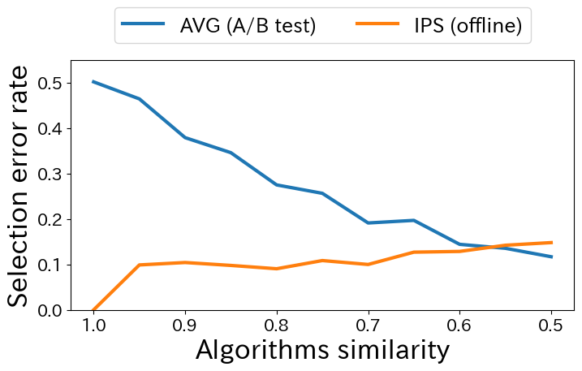
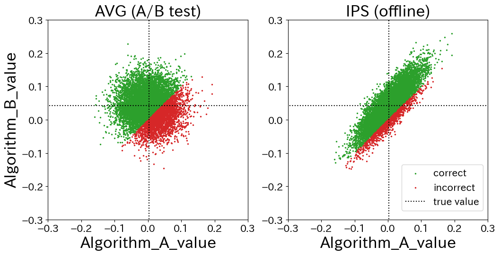
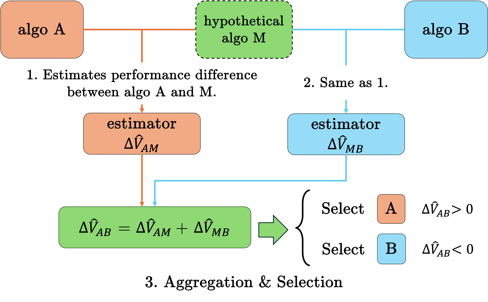

A/B testing is the gold standard for selecting better algorithms in online services. While offline evaluation has attracted attention as a safer alternative due to the high experimental costs and the potential risk of degrading user experience and revenue in A/B testing, it is widely recognized that the estimation accuracy of offline evaluation is substantially lower than that of A/B testing. As a result, final decisions on algorithm selection are typically made through A/B testing. Contrary to this conventional view, we reveal a counterintuitive phenomenon in which A/B testing can produce a higher algorithm selection error rate than offline evaluation. This occurs because the sample mean estimator used in A/B testing does not induce positive correlation, which plays a crucial role in reducing critical selection errors, namely underestimating the truly superior algorithm and overestimating the truly inferior one. In contrast, offline evaluation methods unintentionally generate this beneficial correlation by relying on shared offline data when estimating and comparing the performance of multiple algorithms. Building on this insight, we propose a novel estimator that intentionally induces positive correlation to improve algorithm selection in A/B testing. The key idea is to introduce a hypothetical middle algorithm and to estimate the performance difference between algorithms A and B in a stepwise manner, first between A and the middle algorithm and then between the middle algorithm and B, using shared data at each step. This approach enables the application of offline evaluation techniques in each step, thereby inducing positive correlation and reducing critical selection errors. Furthermore, we derive the optimal middle algorithm regarding the resulting variance and analyze its advantages over existing methods through bias-variance analysis. Experiments on real-world data demonstrate that the proposed estimator achieves the same selection error rate as existing approaches while using only one half of the A/B testing data, indicating a twofold improvement in sample efficiency.
In a pre-experiment, we constructed an A/B testing environment and compared two algorithm selection methods: AVG (sample mean estimator using A/B testing data) and IPS (Inverse Propensity Scoring estimator using only offline data colletced from algorithm A). The primary metric is the selection error rate, which is the proportion of trials where the estimator incorrectly identifies the truly worse algorithm as better.
The results reveal a counterintuitive phenomenon: AVG using A/B testing data, which should be the gold standard, is inferior to IPS using offline data in terms of selection error rate in most cases. For example, when the similarity of algorithms is 0.80, AVG produces an incorrect selection rate of 27.49%, compared to only 9.05% for IPS.

Figure: Comparison of selection error rates between A/B testing (AVG) and offline evaluation (IPS). The horizontal axis represents algorithm similarity; AVG is inferior to IPS in most cases.
Scatter plots of the estimated performance values explain this phenomenon. AVG produces a circular scatter plot because it estimates algorithms A and B from independent datasets, resulting in zero covariance between the two estimators. In contrast, IPS produces an elliptical scatter plot, resulting in a positive correlation that arises as a byproduct of using shared offline data for both algorithms.

Figure: Scatter plots of estimated performance for algorithms A and B. The plot of AVG is a circular shape (zero covariance), while the plot of IPS is an elliptical shape (positive correlation).
This positive correlation reduces the variance of the difference estimator, and suppresses the critical error: overestimating the worse algorithm and underestimating the better one. AVG generates this error in 20.26% of trials, while IPS reduces it to only 3.39%.
Motivated by this insight, we propose the Middle-In-Difference (MID) estimator, which intentionally induces positive correlation within the A/B testing framework. MID introduces a hypothetical middle algorithm M positioned between algorithms A and B, then estimates the performance differences A→M and M→B stepwise using the shared log data from each group. This construction enables variance reduction through positive correlation while fully exploiting the A/B testing data.
Experiments show that MID achieves the same selection error rate as conventional A/B testing using only one half to one quarter of the sample size, representing a substantial improvement in data efficiency across varying algorithm similarities.

Figure: The MID estimator estimates the performance difference between algorithms A and B in two steps via a hypothetical middle algorithm M, inducing positive correlation at each step.
@misc{konishi2026accuratealgorithmcomparisonab,
title={A More Accurate Algorithm Comparison through A/B Testing using Offline Evaluation Methods},
author={Koki Konishi and Masataka Ushiku and Yuta Saito},
year={2026},
eprint={2607.01958},
archivePrefix={arXiv},
primaryClass={cs.LG},
url={https://arxiv.org/abs/2607.01958}, }